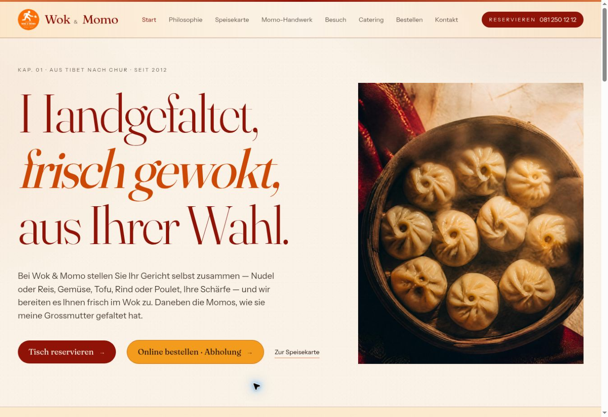

Warme Farbwelt
Creme, dunkles Rot und Orange schaffen einen eigenständigen, gastronomischen Auftritt.

Eine digitale Bühne für tibetische Küche.
Die Website verbindet einen hellen, cremefarbenen Hintergrund mit tiefroten Überschriften und orangefarbenen Akzenten. Das grosse Foto der Momos setzt das Essen in den Mittelpunkt und gibt der Startseite eine warme, einladende Atmosphäre.
Eine markante Serifenschrift prägt den Auftritt. Wechselnde Schriftstile und grosszügige Abstände geben den Überschriften ihren Charakter, während die Begleittexte ruhig und gut lesbar bleiben. Nummerierte Kapitel strukturieren die Inhalte.
Die Navigation führt direkt zu Speisekarte, Momo-Handwerk, Besuch und Catering. Gut sichtbare Buttons für Reservation und Bestellung ergänzen die Gestaltung um klare nächste Schritte.
Creme, dunkles Rot und Orange schaffen einen eigenständigen, gastronomischen Auftritt.
Grosse Serifentitel treffen auf zurückhaltende Begleittexte und viel Raum zwischen den Elementen.
Die wichtigsten Angebote sind direkt erreichbar – vom Blick in die Karte bis zur Bestellung.
Stelle zusammen, was deine Website können soll.